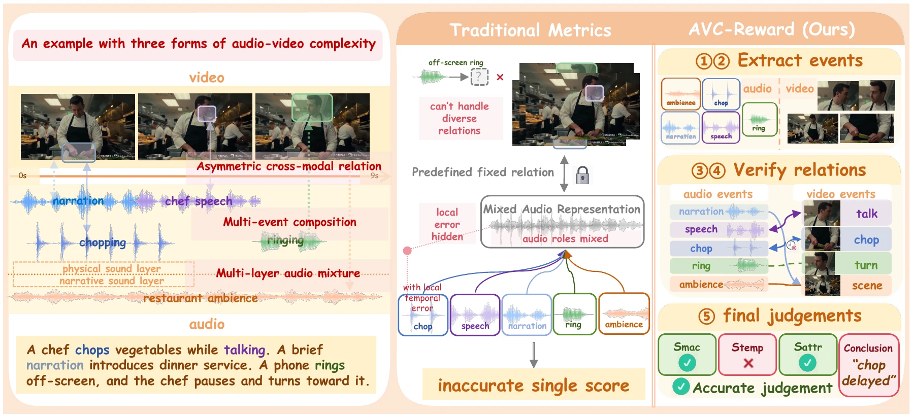

Extract events
Analyze audio and video separately while preserving individual events and sound layers.
Event-Centric Audio-Video Consistency Evaluation
AVC-Reward is a trainable, event-centric audio-video reward model. It independently analyzes audio and visual events, cross-validates their relations, and aggregates judgments into a coarse-to-fine, three-level consistency score.
Method overview
AVC-Reward separates the scene into audio and visual events, verifies how they relate, then combines the evidence at three levels.

Analyze audio and video separately while preserving individual events and sound layers.
Check event presence, timing, attributes, and plausible off-screen sources.
Assess macro-semantic alignment, temporal synchronization, and fine-grained correspondence.
01 · Reward-model examples
The three score columns and conclusion are AVC-Reward outputs. The overall score combines its three dimensions; the human average is shown for reference.
| Case | Macro-semantic | Temporal | Fine-grained | Overall / conclusion |
|---|
02 · Generated examples
Each row uses the same prompt for three audio-video generations: LTX-2, OmniNFT, and Ours (AVC-Reward).
| Prompt | LTX-2 | OmniNFT | Ours |
|---|
03 · Additional generated cases
Each row uses the same prompt for three audio-video generations: LTX-2, OmniNFT, and Ours (AVC-Reward).
| Prompt | LTX-2 | OmniNFT | Ours |
|---|